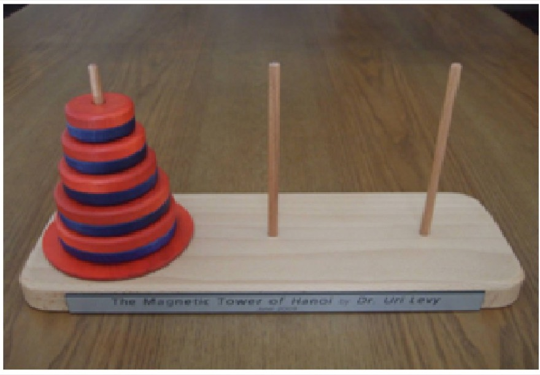

학교 축제를 혼자 준비하려면 막막해요. 하지만 동아리마다 부스 하나씩 맡으면 어떨까요? 요리 동아리는 먹거리 부스, 방송 동아리는 무대, 미술 동아리는 꾸미기. 각자 맡은 일을 끝내고 합치면 축제 전체가 완성돼요.
이렇게 복잡한 문제를 작은 단위로 나누고, 작은 문제의 답을 엮어 전체를 해결하는 방법을 관계 기반 알고리즘이라고 해요.
37차시 · 13주차 · Ⅲ 알고리즘 차시 목록
코드 아래 💡 코드 설명을 펼쳐 보고, 빈칸이 있으면 채운 뒤 실행해 보세요.
교과서 · Ⅲ 3-1 관계 기반 알고리즘의 이해 — 분할 정복
큰 문제를 한입에 삼키려 하지 말고, 작게 쪼개서 하나씩 풀어요. 그리고 큰 문제와 작은 문제가 어떻게 이어져 있는지(관계)를 찾아내요.
전체 문제와 부분 문제 사이의 관계를 알면 문제를 더 쉽게 풀 수 있을까?
학교 축제를 혼자 준비하려면 막막해요. 하지만 동아리마다 부스 하나씩 맡으면 어떨까요? 요리 동아리는 먹거리 부스, 방송 동아리는 무대, 미술 동아리는 꾸미기. 각자 맡은 일을 끝내고 합치면 축제 전체가 완성돼요.
이렇게 복잡한 문제를 작은 단위로 나누고, 작은 문제의 답을 엮어 전체를 해결하는 방법을 관계 기반 알고리즘이라고 해요.
전체 문제를 작은 부분 문제로 나누면 문제가 어떻게 생겼는지 파악하기 쉬워져요.
부분 문제를 푸는 코드를 한 번 만들어 두면 여러 번 재사용할 수 있어요.
부분 문제의 답을 이용해 전체 문제의 답을 구하는 규칙(관계식)을 발견할 수 있어요.
예제 — 1부터 n까지의 합. 1부터 n까지의 합을 f(n)이라고 하면, 부분 문제는 f(1), f(2), f(3) … 이에요.
계단 100칸을 오른 높이를 알고 싶다면, 99칸까지의 높이에 한 칸만 더하면 돼요. 99칸의 높이는 98칸에 한 칸을 더한 것이고요. 이렇게 “큰 문제의 답 = 조금 작은 문제의 답 + 약간”이라는 규칙을 찾으면, 가장 작은 문제(1칸) 하나만 알아도 전체가 풀려요. 이 규칙을 관계식이라고 하고, 수학에서는 수학적 귀납법이라는 방법으로 이런 관계를 나타내요.
관계식은 Ⅰ단원에서 배운 재귀 함수로 그대로 옮길 수 있어요.
def f(n):
if n == 1: # 가장 작은 문제: f(1) = 1
return 1
else:
return f(n - 1) + n # 관계식: f(n) = f(n-1) + n
print(f(10))
| 문제 | 가장 작은 문제 | 관계식 |
|---|---|---|
| 1부터 n까지의 합 | f(1) = 1 | f(n) = f(n−1) + n |
| 팩토리얼 n! | f(1) = 1 | f(n) = f(n−1) × n |
| 하노이 탑 이동 횟수 | T(1) = 1 | T(n) = 2 × T(n−1) + 1 |
| 계단 오르기(1칸 또는 2칸) | f(1) = 1, f(2) = 2 | f(n) = f(n−1) + f(n−2) |

규칙은 두 가지예요. ① 한 번에 원반 하나만 옮길 수 있다. ② 큰 원반을 작은 원반 위에 올릴 수 없다. 원반이 많아지면 어디서부터 손대야 할지 막막해요. 원반 1개짜리, 2개짜리, 3개짜리 문제로 나누어 생각해 봐요.
출발 기둥에서 목표 기둥으로 바로 옮기면 끝. 더 쪼갤 수 없는 가장 작은 문제예요.
① 작은 원반을 보조 기둥으로 ② 큰 원반을 목표 기둥으로 ③ 작은 원반을 목표 기둥으로.
위의 2개를 보조 기둥으로(3번) → 가장 큰 원반을 목표로(1번) → 2개를 다시 목표로(3번).
원반 3개 문제 안에 원반 2개 문제가 두 번 들어 있어요! 원반 n개를 옮기는 횟수를 T(n)이라고 하면:
관계식으로 이동 횟수 구하기
def hanoi_moves(n):
if n == 1:
return 1 # 원반이 1개일 때 이동 횟수는 1회
else:
return # 이전 단계의 두 배 + 1
for n in range(1, 11):
print(f'원반 {n}개: {hanoi_moves(n)}번')
재귀 함수로 이동 순서까지 구하기
def hanoi(n, source, target, aux):
if n == 1: # 원반이 1개일 때
print(source, '->', target) # 출발 기둥 → 목표 기둥
return
# n-1개를 출발 기둥 → 보조 기둥
print(source, '->', target) # 가장 큰 원반을 출발 기둥 → 목표 기둥
# n-1개를 보조 기둥 → 목표 기둥
hanoi(3, 'A', 'C', 'B') # A: 출발, B: 보조, C: 목표
팩토리얼 계산하기 — f(n) = 1 × 2 × 3 × … × n = n! 을 부분 문제로 나누어 관계식을 세우고, 재귀 함수로 완성해 보자.
def f(n):
if n == 1:
return 1 # f(1) = 1
else:
return 0 # 이 줄을 관계식에 맞게 고쳐 보자
print(f(5)) # 120 이 나오면 성공
코드를 고쳐서 ▶ 실행하면 출력이 맞는지 바로 알려 줘요. 막히면 힌트부터 열어 보세요.
f(n) = 1 × 2 × … × n이에요. f(3) = f(2) × 3처럼 ‘바로 앞의 답’을 이용한 관계식을 ___에 채워 보세요. f(5) = 120이 나오면 성공!
def f(n):
if n == 1:
return 1 # f(1) = 1
else:
return ___
print(f(5))
print(f(10))관계식은 f(n) = f(n − 1) × n 이에요. 파이썬의 곱하기는 *.
def f(n):
if n == 1:
return 1 # f(1) = 1
else:
return f(n - 1) * n
print(f(5))
print(f(10))한 번에 1칸 또는 2칸씩 오를 때, 3칸을 오르는 방법은 3가지(1+1+1, 1+2, 2+1)예요. 그런데 이 코드는 2가지라고 해요. 관계식 f(n) = f(n−1) + f(n−2)는 맞는데, 가장 작은 문제 하나가 틀렸어요. 찾아 고쳐 보세요.
def stairs(n): # 한 번에 1칸 또는 2칸
if n == 1:
return 1
elif n == 2:
return 1
return stairs(n - 1) + stairs(n - 2)
for n in range(1, 7):
print(f'{n}칸: {stairs(n)}가지')2칸을 오르는 방법을 직접 세어 보세요: 1칸+1칸, 2칸 한 번.
def stairs(n): # 한 번에 1칸 또는 2칸
if n == 1:
return 1
elif n == 2:
return 2
return stairs(n - 1) + stairs(n - 2)
for n in range(1, 7):
print(f'{n}칸: {stairs(n)}가지')원반이 1개일 때만 적혀 있어요. 관계(① n−1개를 보조로 ② 가장 큰 원반을 목표로 ③ n−1개를 목표로)를 코드 세 줄로 직접 써서 완성해 보세요. 이동은 moves.append(source + '->' + target)처럼 기록해요. 이동 횟수가 2ⁿ − 1과 같은지 확인해요.
moves = []
def hanoi(n, source, target, aux):
if n == 1:
moves.append(source + '->' + target)
return
pass # 여기에 세 줄
hanoi(2, 'A', 'C', 'B')
print('원반 2개:', moves)
for n in range(1, 6):
moves = []
hanoi(n, 'A', 'C', 'B')
print(f'원반 {n}개: {len(moves)}번 (2**{n} - 1 = {2 ** n - 1})')hanoi(n - 1, source, aux, target) → moves.append(source + '->' + target) → hanoi(n - 1, aux, target, source)
moves = []
def hanoi(n, source, target, aux):
if n == 1:
moves.append(source + '->' + target)
return
hanoi(n - 1, source, aux, target)
moves.append(source + '->' + target)
hanoi(n - 1, aux, target, source)
hanoi(2, 'A', 'C', 'B')
print('원반 2개:', moves)
for n in range(1, 6):
moves = []
hanoi(n, 'A', 'C', 'B')
print(f'원반 {n}개: {len(moves)}번 (2**{n} - 1 = {2 ** n - 1})')해설 — 위의 n−1개를 두 번 옮기는 사이에 가장 큰 원반을 딱 한 번 옮겨요.
해설 — 멈출 곳이 없으면 계속 호출하다가 RecursionError가 나요. 관계식과 가장 작은 문제가 함께 있어야 해요.
오늘 본 관계식 하나를 골라 ‘큰 문제의 답 = 작은 문제의 답 + ○○’ 꼴의 말로 풀어 적어 보세요.